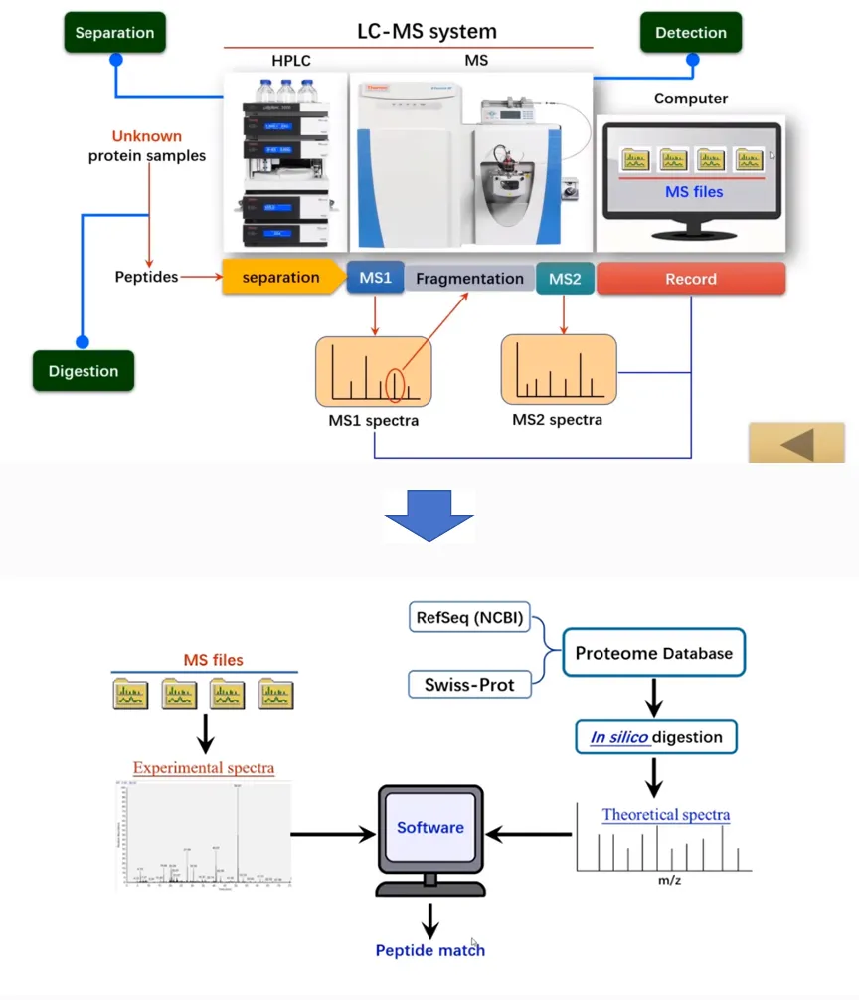

Mass spectrometry-based protein identification is one of the important methods for protein identification.
Proteins are macromolecules composed of 20 common amino acids linked by peptide bonds (-CO-NH).
The amino group of the protein (NH₂-) is called the N-terminus, and the carboxyl group (-COOH) is called the C-terminus.
Mass spectrometry-based protein identification involves identifying the primary structure of the protein, which includes the amino acid composition and sequence.
The "Shotgun" protein identification method is a typical mass spectrometry-based protein identification method, known as the "Bottom-up" approach.
First, the protein sample is digested into a mixture of peptides using proteases.
After chromatographic separation and ionization, the peptide mixture is analyzed by mass spectrometry to generate a tandem mass spectrometry (MS/MS) spectrum.
The spectrum is then matched with a database using specific analysis software, identifying the corresponding peptide sequences and scores.
The protein identification results are obtained by matching the identified peptide sequences to their protein sources.

Figure. 1. Flow Chart of Protein Identification.
MtoZ Biolabs has an advanced mass spectrometry analysis platform and offers MS-based protein identification service that accurately identify proteins from protein gel spots, gel bands, IP samples, CO-IP samples, and more.
The protein sample preparation process before identification is strictly followed according to the standard procedures, ensuring higher peptide coverage during the identification experiment.
1. Multiple Mass Spectrometers
MtoZ Biolabs owns several mainstream mass spectrometers (e.g., Orbitrap Astral, Orbitrap Exploris 480, Orbitrap Fusion™ Lumos™ Tribrid™, QExactive, etc.), establishing a MS-based protein identification service platform that guarantees reliable, fast, and high-precision analysis services.
2. Experienced Team
We have an experienced technical team available to answer all technical questions on a 1v1 basis.
3. Transparent Pricing
Our pricing is transparent, with no hidden or additional fees. One-time payment with lifetime after-sales service.
1. Sample Types
(1) Single or mixed protein samples are acceptable.
(2) Gel bands (Coomassie stain/Silver stain), beads after IP, liquid/solid samples, cells, bacteria, tissues, blood, urine, paraffin-embedded tissue sections, and more.
Note: If you have any special requirements or need assistance with sample preparation, please contact us.
1. Basic Biological Research
MS-based protein identification service can be used to identify proteins involved in cellular metabolism, signal transduction, cell cycle regulation, and other processes.
2. Disease Diagnosis
Protein identification methods can be used to detect abnormal changes in protein expression and modifications in patient biological samples (such as blood, urine, tissues, etc.), serving as an auxiliary tool for disease diagnosis.
3. Biomarker Discovery
MS-based protein identification service can be used to screen protein biomarkers related to disease onset, progression, and prognosis. By performing mass spectrometry analysis on large-scale clinical samples and combining bioinformatics methods, specific and sensitive biomarkers can be identified, providing a foundation for early diagnosis, therapeutic target selection, and drug development.
4. Drug Development
Protein identification can determine protein targets for drug action, track the metabolic process of drugs in the body, study the mechanisms of drug action and pharmacological evaluation, and provide critical information for various stages of drug development.
5. Food Safety Testing
MS-based protein identification service can be used to identify potential allergenic proteins in food, analyze the protein composition of food, and detect illegal additives or adulterants. Monitoring protein changes during food processing ensures that food meets quality standards.
Hepatocellular carcinoma (HCC) is a common and deadly disease. Converting macrophages into chimeric antigen receptor macrophages (CAR-Ms) is believed to enhance the phagocytic function and anti-tumor immunity of HCC cells. To test this hypothesis, mRNA encoding the CAR was encapsulated in lipid nanoparticles (LNPs) targeted to liver macrophages. The LNPs adsorbed specific plasma proteins, enabling them to target HCC-associated macrophages. Through MS-based protein identification service that 348 plasma proteins were successfully identified as being adsorbed onto the surface of PPZ-A10 LNPs, and 161 proteins were adsorbed onto the surface of DLin-MC3-DMA LNPs, providing crucial research data for this study. Additionally, mRNA encoding Siglec-G without ITIMs (Siglec-GΔITIMs) was co-delivered via LNPs to liver macrophages to alleviate CD24-mediated CAR-Ms immune suppression. In the HCC mouse model, mice producing CAR-Ms and blocking CD24-Siglec-G significantly enhanced the phagocytic function of liver macrophages, reduced tumor burden, and increased survival time, providing an effective and flexible therapeutic strategy for treating HCC.
Yang, Z M. et al. Journal of Controlled Release, 2023.
Figure 1: Your caption text here
1. Comprehensive Experimental Details
2. Materials, Instruments, and Methods
3. Total Ion Chromatogram & Quality Control Assessment
4. Data Analysis, Protein Lists, and Project Reports
5. Raw Data Files
MtoZ Biolabs has achieved remarkable success in the field of mass spectrometry-based protein identification. We have successfully helped numerous research institutions, universities, and enterprises publish a large number of high-level research papers in internationally renowned academic journals. These papers cover various fields of life sciences, demonstrating our outstanding expertise and service quality in protein identification technology, as well as our important contribution to advancing global proteomics research.